Capítulo 11. De la representación dispersa a la densa
El capítulo anterior terminó con una deuda precisa. El modelo de espacio vectorial resolvió cómo comparar —por proximidad, con el coseno— pero arrastró un defecto de representación: su vector es disperso y literal, una dimensión por palabra, y por eso «coche» y «automóvil», que significan lo mismo, viven en dimensiones distintas y no se parecen en nada. El significado se le escapa al vector que solo ve cadenas. Este capítulo salda esa deuda: contrapone la representación dispersa —one-hot, bolsa de palabras, TF-IDF, de dimensión enorme y casi toda nula— con la densa —de pocos cientos de componentes, todas significativas—, explica por qué la primera sufre la maldición de la dimensionalidad y la segunda la mitiga, y define el embedding como una representación densa donde la proximidad geométrica captura el parecido semántico.
La idea que lo hace posible es vieja y profunda, y conviene enunciarla desde el principio: la hipótesis distribucional de Harris (Harris 1954), que se resume en una frase —«se conoce una palabra por la compañía que mantiene»—. Si dos palabras aparecen en contextos parecidos, significan cosas parecidas; y entonces el significado de una palabra puede inferirse de con qué otras coaparece, sin más que contar. De esa idea sale la construcción del vector denso, y este capítulo la lleva a la práctica de la forma más simple posible —contando co-ocurrencias y comprimiéndolas—, dejando para el capítulo 12 cómo el aprendizaje profundo construye embeddings mucho más ricos. Aquí basta el principio: el significado vive en el contexto, y el contexto se puede medir.
Como siempre, nada se afirma sin medirlo. El módulo de la práctica —Python con numpy, sin GPU— construye las dos representaciones sobre un corpus real y mide cinco cosas: cómo la ocupación del vector disperso se desploma, cómo en dimensión alta las distancias se concentran y los vectores se vuelven ortogonales —la maldición—, cómo el embedding denso acerca las palabras del mismo tema mientras el one-hot las deja a todas equidistantes, y cómo unas pocas dimensiones densas bastan para capturar la estructura de un vocabulario mucho mayor. El lector saldrá entendiendo no solo qué es un embedding, sino por qué la densidad y la baja dimensión son necesarias —y ese porqué es la llave de toda la cuarta parte, donde buscar los vectores más próximos a escala exigirá, precisamente, que sean densos y de dimensión contenida.
La representación dispersa
La forma más elemental de convertir una palabra en un vector es la codificación one-hot: se fija un vocabulario, se le da a cada palabra una posición, y la palabra se representa con un vector que tiene un \(1\) en su posición y ceros en todas las demás (figura 11.1, listado 11.1). La dimensión del vector es el tamaño del vocabulario —decenas de miles—, y cada palabra ocupa una sola de esas dimensiones.
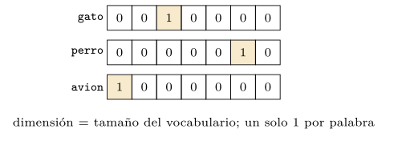
def one_hot(palabra, vocab):
v = [0] * len(vocab) # dimension = tamano del vocabulario
v[vocab.index(palabra)] = 1 # un unico 1, en su posicion
return vListado 11.1. Codificacion one-hot: un vector con un solo 1 en la posicion de la palabra.
Un documento se representa sumando los one-hot de sus palabras: el resultado es la bolsa de palabras (bag of words), el vector de cuentas por término (figura 11.2, listado 11.2). Es la representación que subyace al TF-IDF del capítulo 10 —que no es más que una bolsa de palabras con los pesos \(\mathrm{tf}\times\mathrm{idf}\) en lugar de las cuentas brutas—, y comparte con el one-hot el rasgo definitorio: la dimensión es el vocabulario entero, y casi todas las componentes valen cero, porque un documento usa solo un puñado de palabras distintas.
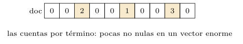
def bolsa(doc, vocab):
v = [0] * len(vocab)
for palabra in doc.split():
v[vocab.index(palabra)] += 1 # cuenta de cada termino
return vListado 11.2. Bolsa de palabras: el vector de cuentas por termino de un documento.
La ocupación se desploma
Estas representaciones son dispersas: muchísimas dimensiones, poquísimas no nulas. La práctica mide esa dispersión (figura 11.3). La ocupación de un vector one-hot —la fracción de dimensiones no nulas— es \(1/V\), donde \(V\) es el vocabulario: con cien mil palabras, una cienmilésima. La de una bolsa de palabras es algo mayor —tantas componentes como palabras distintas tenga el documento, divididas por \(V\)—, pero igual de ínfima al crecer el vocabulario. En el otro extremo, el vector denso de la sección 11.4 ocupa todas sus dimensiones: su ocupación es uno, constante. El contraste es de varios órdenes de magnitud, y crece con el vocabulario.
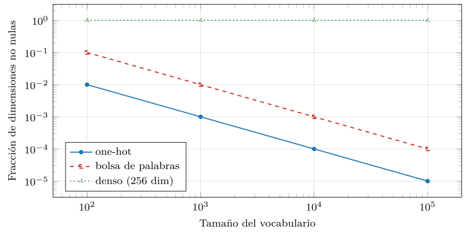
src/cap11_dispersa_densa.py.Esa dispersión tiene una cara de almacenamiento que conviene cuantificar, porque sorprende (listado 11.3). Un vector disperso de cien mil dimensiones con diez no nulas no se guarda con cien mil números —sería absurdo—, sino como una lista de los diez pares (posición, valor): unos ciento sesenta bytes. Un vector denso de quinientas dimensiones, en cambio, guarda sus quinientos números: unos dos mil bytes. Paradójicamente, el vector denso ocupa más que el disperso, pese a tener doscientas veces menos dimensiones, porque el disperso solo paga por lo que usa. La densidad no se elige para ahorrar memoria —no la ahorra—, sino por lo que el disperso no puede dar: significado.
disperso (one-hot/TF-IDF), 100000 dim, 10 no nulas:
se guarda como 10 pares (posicion, valor) ~ 160 bytes
denso (embedding), 500 dim, todas con valor:
se guardan 500 numeros ~ 2000 bytes
# el denso ocupa MAS, pese a tener 200x menos dimensionesListado 11.3. Memoria de un vector disperso frente a uno denso: el disperso solo paga por lo no nulo.
Pero el almacenamiento no es el problema de fondo. Lo es la geometría del vector, que la dispersión revela y que ninguna técnica de compresión arregla.
El defecto fatal: todo es ortogonal
La codificación one-hot tiene una consecuencia geométrica devastadora: hace ortogonales todas las palabras (figura 11.4). Dos vectores one-hot distintos no comparten ningún \(1\), así que su producto escalar es cero y su coseno es cero. Y cero es cero para todos los pares: «gato» y «felino» tienen coseno cero, exactamente igual que «gato» y «avión». La representación no contiene ninguna noción de parecido: todas las palabras están a la misma distancia máxima unas de otras, sin grados.
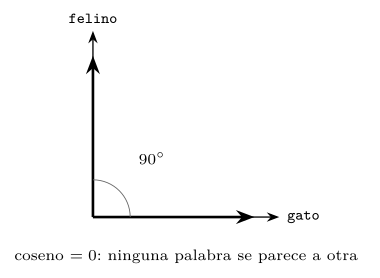
Un ejemplo con números lo deja claro (listado 11.4). Tres palabras en un vocabulario de cinco: sus one-hot no comparten ninguna posición, así que cualquier producto escalar entre dos es cero, y el coseno también. No hay forma de que «gato» se parezca más a «felino» que a «avión»: las tres están, geométricamente, a la misma distancia máxima.
vocab = [gato, felino, perro, avion, mesa]
gato = (1,0,0,0,0) felino = (0,1,0,0,0)
gato . felino = 1*0+0*1+0*0+0*0+0*0 = 0 -> coseno 0
gato . avion = 0 -> coseno 0
# "felino" no esta mas cerca de "gato" que "avion": ambos a 0Listado 11.4. One-hot: el producto escalar —y por tanto el coseno— entre dos palabras distintas es siempre cero.
Esta es, vista en geometría, la discordancia de términos que el capítulo 10 lamentaba. Allí se dijo que el modelo «compara cadenas, no significados»; aquí se ve por qué: si cada palabra es un eje independiente, el espacio no tiene forma de registrar que dos ejes «significan lo mismo». La bolsa de palabras hereda el defecto: dos documentos solo se parecen si comparten términos literales, y un texto sobre «coches» y otro sobre «automóviles» pueden tener coseno cero pese a hablar de lo mismo. El problema no es el peso ni la métrica —el coseno funciona perfectamente—, sino el espacio: uno donde las palabras son ortogonales por construcción no puede capturar el significado. Hace falta otro espacio.
La maldición de la dimensionalidad
Antes de construir ese otro espacio conviene entender por qué la altísima dimensión de las representaciones dispersas es, además de un derroche, un peligro. El fenómeno tiene nombre desde que lo acuñó Bellman (Bellman 1961): la maldición de la dimensionalidad, el conjunto de comportamientos contraintuitivos del espacio cuando el número de dimensiones es grande. Dos de ellos importan para todo lo que sigue.
Las distancias se concentran
El primero, y el más grave para la búsqueda por similitud, es la concentración de las distancias (Beyer et al. 1999). En dimensión baja, el vecino más cercano de un punto está claramente más cerca que el más lejano; en dimensión alta, esa diferencia se desvanece: todos los puntos quedan, aproximadamente, a la misma distancia (figura 11.5). La práctica lo mide con el contraste —la diferencia entre la distancia máxima y la mínima de un punto al resto, dividida por la mínima— al crecer la dimensión (figura 11.6): de un contraste de cien en dimensión dos baja a una décima en dimensión mil. Cuando el más cercano y el más lejano están casi a la misma distancia, la pregunta «¿cuál es el más parecido?» pierde su sentido, porque la respuesta es «casi todos por igual».
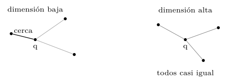
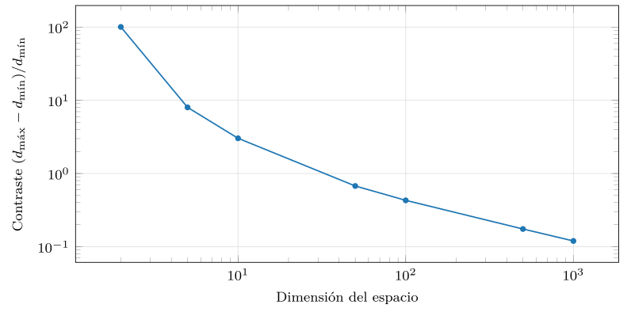
src/cap11_dispersa_densa.py.La consecuencia para las representaciones dispersas es directa y seria: un vector one-hot o TF-IDF vive en un espacio de decenas de miles de dimensiones, justo el régimen donde las distancias se concentran. La búsqueda por proximidad sobre vectores tan altos es, en el peor caso, poco fiable, porque la noción misma de «más próximo» se difumina. Lo que salva al TF-IDF en la práctica —y conviene la honestidad— es que sus vectores son dispersos: dos documentos solo interactúan en las pocas dimensiones que comparten, de modo que el coseno efectivo se calcula en un subespacio de dimensión baja. Pero esa misma dispersión es la que les impide capturar similitud. La salida del dilema no es ni la dispersión alta ni la densidad alta, sino la densidad baja: pocas dimensiones, todas usadas.
Casi todo es perpendicular
El segundo fenómeno es pariente del primero y igual de contraintuitivo: en dimensión alta, dos vectores tomados al azar son casi siempre casi ortogonales. La práctica mide el coseno medio (en valor absoluto) entre vectores aleatorios al crecer la dimensión (figura 11.7): de \(0{,}63\) en dimensión dos baja a \(0{,}025\) en dimensión mil. En un espacio de dimensión alta hay «sitio» para muchísimas direcciones mutuamente casi perpendiculares, así que dos vectores cualesquiera rara vez apuntan parecido por azar.
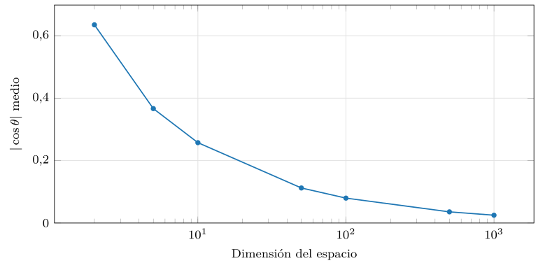
src/cap11_dispersa_densa.py.Esto tiene una cara mala y una buena. La mala: refuerza la concentración de distancias, porque si casi todo es perpendicular, casi todo está a una distancia parecida. La buena, que la sección siguiente aprovecha: en un espacio denso de unos cientos de dimensiones cabe un número inmenso de direcciones casi ortogonales, lo que da espacio de sobra para colocar cada concepto en su sitio sin que se estorben. La dimensión, en su justa medida —ni dos, ni cien mil, sino unos cientos—, es un recurso, no una maldición.
La hipótesis de la variedad
Hay una razón profunda por la que unos cientos de dimensiones bastan para representar el significado de un vocabulario de decenas de miles, y conviene nombrarla porque sostiene toda la cuarta parte: la hipótesis de la variedad (manifold hypothesis). Dice que los datos reales, aunque vivan en un espacio de dimensión nominal altísima —una imagen de un millón de píxeles, un texto de un vocabulario enorme—, no llenan ese espacio: se concentran en una variedad de dimensión mucho menor, encajada dentro del espacio grande. Las imágenes de caras posibles son un punto ínfimo del espacio de todas las imágenes; las frases con sentido, un rincón diminuto del espacio de todas las secuencias de palabras. La dimensión intrínseca —la de esa variedad— es baja, aunque la dimensión ambiente —la del espacio que la contiene— sea enorme.
El embedding, en el fondo, no hace más que coordinar esa variedad: encontrar los pocos ejes que de verdad la describen y dar a cada objeto sus coordenadas en ellos. Por eso la SVD de la sección siguiente captura casi toda la estructura con pocas componentes (figura 11.12): no está tirando información, está descartando las dimensiones ambiente vacías y quedándose con las intrínsecas llenas. Y por eso la maldición de la dimensionalidad, que parecía condenar toda búsqueda por proximidad, tiene escapatoria: si los datos viven en una variedad de baja dimensión, basta representarlos en esa dimensión baja —el embedding— para que las distancias vuelvan a ser significativas. La maldición es de la dimensión ambiente; el embedding trabaja en la intrínseca.
Observación. La maldición de la dimensionalidad es la razón profunda de por qué la cuarta parte de este libro existe. Buscar el vector más próximo a una consulta es trivial si los vectores son pocos: se comparan todos. Pero a escala —millones de vectores de cientos de dimensiones— la comparación exhaustiva es inviable, y los índices que la aceleran (capítulo 14) tropiezan, precisamente, con la concentración de distancias: en dimensión alta, podar el espacio de búsqueda es difícil porque «cerca» y «lejos» se parecen. Toda la ingeniería de las bases vectoriales —los índices aproximados, las métricas, la reducción de dimensión— es, en el fondo, una lucha contra la maldición que este capítulo describe. Por eso importa entenderla ahora.
El embedding: la representación densa
La salida es cambiar de espacio: de uno con una dimensión por palabra —disperso, enorme, ortogonal— a uno con unas pocas dimensiones latentes —denso, compacto, donde la proximidad significa parecido— (figura 11.8). Ese vector denso es lo que se llama un embedding: una representación de dimensión contenida (unos cientos) cuyas componentes no son palabras sino rasgos abstractos del significado, y construida de modo que dos cosas parecidas queden cerca.
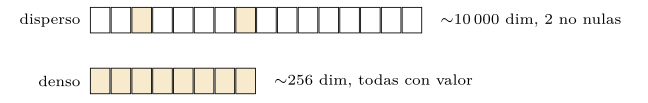
Construir el embedding contando contextos
¿De dónde salen esas dimensiones latentes? De la hipótesis distribucional: si el significado de una palabra está en su compañía, basta contar con qué coaparece. El procedimiento más simple —el que la práctica usa, y que es esencialmente la indexación semántica latente del capítulo 10 (Deerwester et al. 1990)— tiene tres pasos (figura 11.9). Primero, construir la matriz de co-ocurrencia: una tabla \(V\times V\) donde la celda \((a,b)\) cuenta cuántas veces las palabras \(a\) y \(b\) aparecen juntas (listado 11.5). Segundo, comprimir esa matriz —enorme y dispersa— con la descomposición en valores singulares (SVD), quedándose con las pocas dimensiones más importantes (listado 11.6). Tercero, usar las filas de la matriz comprimida como vectores densos de las palabras.
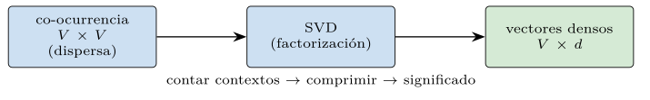
def coocurrencia(corpus, vocab):
idx = {p: i for i, p in enumerate(vocab)}
m = np.zeros((len(vocab), len(vocab)))
for frase in corpus:
ids = [idx[p] for p in set(frase)]
for a in ids:
for b in ids:
if a != b:
m[a, b] += 1 # a y b coaparecen
return mListado 11.5. Matriz de co-ocurrencia: cuantas veces dos palabras salen en la misma frase.
def embeddings_densos(cooc, dim=16):
m = np.log1p(cooc) # amortigua las cuentas grandes
u, s, _ = np.linalg.svd(m, full_matrices=False)
return u[:, :dim] * s[:dim] # V x dim: un vector por palabraListado 11.6. Embedding denso por SVD de la co-ocurrencia: las filas comprimidas son los vectores de las palabras.
El resultado es notable: palabras que aparecen en contextos parecidos —aunque nunca juntas— acaban con vectores parecidos, porque sus filas de co-ocurrencia se parecen. La discordancia de términos se atenúa no por mirar las palabras, sino por mirar su compañía.
La traza del listado 11.7 sigue el proceso. Las filas de la matriz de co-ocurrencia son ya vectores —dispersos, de dimensión \(V\)— que captan algo del significado: «base» y «datos» tienen filas parecidas porque coaparecen con las mismas palabras. La SVD comprime esas filas de dimensión \(V\) a dimensión \(d\) conservando lo esencial, y el resultado son vectores densos cortos donde el parecido se mantiene. Contar produce un vector disperso útil; comprimir lo vuelve denso y manejable.
co-ocurrencia (fila de "base", dispersa, dim V):
base: {datos:40, consulta:22, tabla:18, indice:9, ...}
datos: {base:40, consulta:25, tabla:20, indice:8, ...} (parecida)
SVD -> dim d=16 (densa):
base = [ 0.31, -0.12, 0.44, ...] (16 numeros)
datos = [ 0.29, -0.10, 0.46, ...] (casi igual: coseno 0.95)Listado 11.7. Traza co-ocurrencia -> SVD: de filas dispersas de dimension V a vectores densos de dimension d, conservando el parecido.
La similitud emerge y pocas dimensiones bastan
Conviene ver una misma palabra en las tres representaciones, una debajo de otra, porque el contraste lo dice todo (listado 11.8). En one-hot, «base» es un vector de dimensión \(V\) con un único \(1\): no dice nada de su significado, solo su identidad. En la fila de co-ocurrencia —ya un vector de significado, pero disperso y de dimensión \(V\)— «base» se describe por su compañía: aparece con «datos», «consulta», «tabla». Y en el embedding denso —dimensión \(d\), todo lleno— esa misma información se comprime en unos pocos números cuya posición coloca a «base» junto a «datos» en el espacio. Las tres son la misma palabra; la última es la única que sabe a qué se parece.
one-hot (dim V): (0,...,0,1,0,...,0) solo su posicion; sin sentido
co-ocurr.(dim V): {datos:40, consulta:22, tabla:18, ...} su compania
denso (dim d=16): [0.31,-0.12, 0.44, ...] significado comprimido
-> vecino mas proximo: "datos" (coseno 0.95)Listado 11.8. La palabra «base» en las tres representaciones: identidad (one-hot), compania (co-ocurrencia) y significado comprimido (denso).
La prueba está en medir si el embedding captura el parecido que el one-hot no podía (figura 11.10). En el espacio denso, los pares de palabras del mismo tema —«afines»— tienen un coseno medio de \(0{,}94\), y los de temas distintos —«ajenas»—, de \(0{,}29\): el embedding separa con claridad lo relacionado de lo ajeno. En one-hot, en cambio, cualquier par de palabras distintas tiene coseno cero, afín o ajeno por igual: la representación no distingue. Lo que era imposible —graduar el parecido entre palabras— se ha vuelto natural.
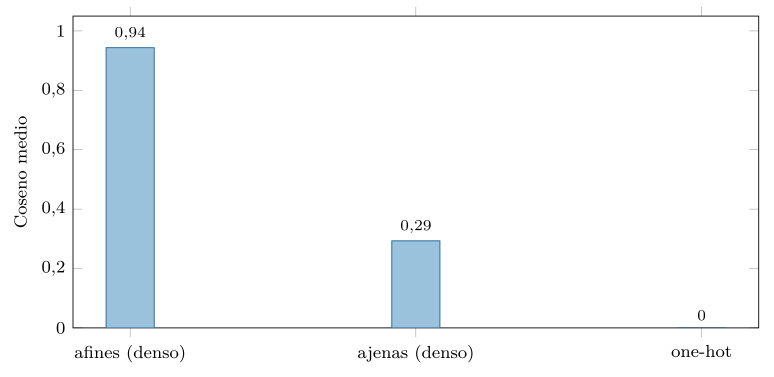
src/cap11_dispersa_densa.py.Esa separación se traduce en una estructura geométrica con sentido (figura 11.11): las palabras se agrupan por significado, los temas forman cúmulos, y dentro de cada cúmulo los términos afines quedan próximos. El espacio denso tiene forma, y esa forma es el mapa del significado que al espacio disperso le faltaba.
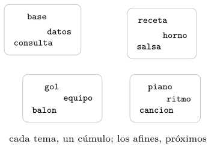
Queda una pregunta: ¿cuántas dimensiones densas hacen falta? La práctica la responde midiendo la varianza que retienen las primeras componentes del SVD (figura 11.12): ocho componentes capturan el 94 % de la estructura, y dieciséis, el 96 %. Es decir, un vocabulario de decenas de palabras —y, en el caso real, de decenas de miles— se resume sin apenas pérdida en unas pocas dimensiones. Esto no es casualidad: refleja que los datos reales, aunque vivan en un espacio de dimensión nominal altísima, tienen una dimensión intrínseca baja —se concentran en una superficie de pocas dimensiones dentro del espacio enorme—. El embedding no inventa esa baja dimensión: la descubre.
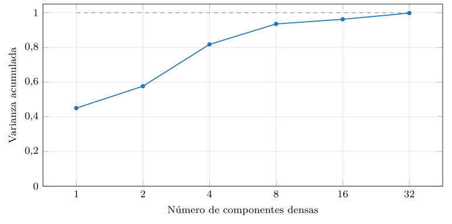
src/cap11_dispersa_densa.py.Y aquí se cierra el círculo con la maldición de la dimensionalidad. El embedding denso de baja dimensión mitiga sus dos efectos: al tener pocas dimensiones, las distancias vuelven a concentrarse menos y «el más cercano» recobra sentido; y al tener dimensiones con significado —rasgos latentes, no palabras—, la proximidad mide parecido real y no coincidencia de cadenas. La densidad baja es, a la vez, la cura del derroche del vector disperso, de su ortogonalidad y de la maldición de su altísima dimensión.
La aritmética del significado
Hay una propiedad del espacio denso tan llamativa que conviene anticiparla, aunque su forma más célebre llegue con los embeddings neuronales del capítulo 12: en un buen embedding, las relaciones entre conceptos se vuelven direcciones en el espacio, y el significado admite aritmética. El ejemplo clásico —que word2vec hizo famoso (Mikolov et al. 2013)— es que el vector de «rey» menos el de «hombre» más el de «mujer» cae cerca del de «reina»: la dirección que va de lo masculino a lo femenino es constante, y sumarla transporta cualquier concepto a su equivalente. En el embedding por co-ocurrencia de este capítulo, más modesto, esa aritmética asoma de forma incipiente, pero la idea es la misma y profunda: si el espacio tiene forma, sus direcciones tienen significado.
vec("rey") - vec("hombre") + vec("mujer") ~= vec("reina")
vec("paris") - vec("francia") + vec("italia") ~= vec("roma")
# la direccion "masculino->femenino" o "pais->capital" es constanteListado 11.9. La aritmetica del significado: las relaciones son direcciones constantes en el espacio denso.
La traza del listado 11.10 hace explícita la operación. Se toman los vectores de cuatro palabras, se calcula \(\text{rey}-\text{hombre}+\text{mujer}\), y se busca qué vector del vocabulario queda más cerca del resultado: si el espacio está bien formado, es «reina». No hay nada mágico —es resta y suma de vectores y una búsqueda de vecino más próximo—, pero el hecho de que funcione revela que la dirección «realeza» y la dirección «género» son ejes coherentes del espacio.
objetivo = emb["rey"] - emb["hombre"] + emb["mujer"]
mejor = max(vocab, key=lambda w: coseno(objetivo, emb[w]))
# mejor == "reina" si el espacio codifica genero y realeza como ejesListado 11.10. Traza de una analogia: aritmetica de vectores y vecino mas proximo.
Esto no es un truco: es la consecuencia de que el espacio denso codifica el significado en su geometría. Donde el one-hot no tenía ninguna dirección con sentido —todos los ejes eran palabras inconexas—, el embedding tiene direcciones que corresponden a relaciones semánticas. Es la prueba más vívida de que el vector denso no solo mide parecido, sino que organiza el significado, y anticipa por qué los embeddings serán tan poderosos en todo lo que sigue.
La tabla 11.1 resume el contraste entre las dos familias, que es el eje del capítulo.
| Dispersa (one-hot, TF-IDF) | Densa (embedding) | |
|---|---|---|
| Dimensión | enorme (vocabulario) | contenida (cientos) |
| Ocupación | casi nula | total |
| Dimensiones | palabras literales | rasgos latentes |
| Similitud | solo si comparten términos | por significado |
| Origen | contar | aprender / factorizar |
Definición (Embedding). Un embedding es una representación de un objeto —palabra, documento, imagen— como un vector denso de dimensión contenida (típicamente de decenas a unos pocos miles), aprendido o construido de modo que la proximidad geométrica entre vectores corresponda a la similitud semántica entre objetos. Sus dimensiones no son rasgos interpretables uno a uno, sino coordenadas latentes de un espacio donde «cerca» significa «parecido».
Cuántas dimensiones: el compromiso
Si pocas dimensiones bastan, ¿cuántas exactamente? La elección es un compromiso, y conviene fijarlo porque reaparecerá en cada decisión de la cuarta parte. Demasiado pocas dimensiones —diez, veinte— no dan espacio para distinguir todos los matices del significado: conceptos distintos acaban amontonados, y el embedding pierde resolución. Demasiadas —decenas de miles— traen de vuelta la maldición de la dimensionalidad y, además, encarecen todo: cada vector ocupa más memoria y cada comparación cuesta más operaciones. El punto dulce, que la práctica y la industria sitúan entre unos cientos y unos pocos miles de dimensiones, es donde el espacio es lo bastante amplio para colocar cada concepto y lo bastante contenido para que la búsqueda siga siendo manejable.
Ese compromiso tiene consecuencias concretas que la cuarta parte cuantificará. La dimensión del embedding es, a la vez, el tamaño de cada vector almacenado —y por tanto la memoria de la base vectorial— y el coste de cada comparación —y por tanto la latencia de la búsqueda—. Un embedding de mil quinientas dimensiones ocupa el triple que uno de quinientas y se compara tres veces más despacio, para una ganancia de calidad que a menudo es marginal. Por eso los modelos modernos ofrecen embeddings de dimensión truncable —los llamados Matryoshka (Kusupati et al. 2022), que el capítulo 12 menciona—, donde se puede quedarse con las primeras dimensiones y sacrificar algo de calidad por mucha velocidad. La dimensión del embedding no es un detalle técnico: es la perilla que gobierna el equilibrio entre calidad, memoria y velocidad de toda la base vectorial.
La práctica mide ese compromiso en pequeño (figura 11.13): construye el embedding del corpus con dimensión creciente y comprueba qué fracción de palabras tiene su vecino más próximo en el mismo tema. Con una sola dimensión, los cuatro temas no caben —forzados sobre una recta, se mezclan— y el acierto se queda en el 22 %; con dos dimensiones basta para separar cuatro cúmulos, y el acierto salta al 100 %, donde se mantiene al añadir más. La forma es la enseñanza: por debajo de un umbral, faltan dimensiones para colocar los conceptos sin que se pisen; por encima, la calidad se satura y dimensiones de más solo cuestan memoria y cómputo. En este corpus de juguete, con cuatro temas nítidos, ese umbral es dos; en datos reales, con miles de conceptos entrelazados, son cientos —pero la curva tiene siempre el mismo perfil, y elegir la dimensión es elegir el punto donde se aplana.
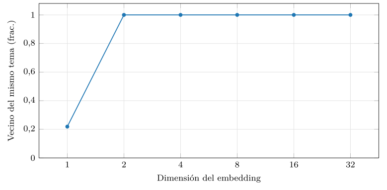
src/cap11_dispersa_densa.py.Embeddings de cualquier cosa
Hasta aquí se ha hablado de embeddings de palabras, pero la idea no tiene nada de específico del lenguaje, y conviene verlo porque es lo que hace de los embeddings la lingua franca de la cuarta parte. Cualquier objeto del que se pueda decir «esto se parece a aquello» admite un embedding: basta representarlo como un vector denso de modo que la proximidad capture el parecido relevante. Un documento entero se puede embeber —promediando los vectores de sus palabras, o, mejor, con un modelo que lo procese de una pieza— para buscar documentos parecidos. Una imagen se embebe con una red que la convierte en un vector donde dos fotos del mismo objeto quedan cerca. Un usuario o un producto de una tienda se embeben a partir de su comportamiento —qué compra, qué ve— de modo que usuarios con gustos parecidos, o productos comprados juntos, queden próximos; es la base de los sistemas de recomendación.
La consecuencia es unificadora y profunda. Si todo —texto, imagen, audio, usuarios, productos— se puede representar como un vector denso en un espacio donde la proximidad es parecido, entonces una misma maquinaria —almacenar vectores y buscar los más próximos— sirve para todos. Una base de datos vectorial no sabe ni le importa si sus vectores vienen de textos, fotos o clientes: solo guarda puntos en un espacio y encuentra los cercanos. Esa indiferencia al origen del dato es lo que convierte el embedding en una pieza tan central, y lo que permite, por ejemplo, buscar imágenes con una frase —si texto e imagen comparten espacio, como en los modelos multimodales del capítulo 12, una frase y la foto que describe quedan cerca, y buscar es, otra vez, medir proximidad—.
Cómo se sabe si un embedding es bueno
Si los embeddings son la pieza central, hace falta saber cuándo uno es mejor que otro, y la evaluación de embeddings es una disciplina con sus métodos. Se divide en dos familias, y conviene conocerlas porque el capítulo 12 las usará para comparar modelos.
La evaluación intrínseca mide el embedding por sí mismo, sin tarea final, comparando su geometría con juicios humanos. La prueba de similitud: a personas se les pide puntuar cuánto se parecen pares de palabras —«coche» y «automóvil», un nueve; «coche» y «manzana», un uno—, y se comprueba si el coseno entre sus vectores correlaciona con esas puntuaciones; un buen embedding correlaciona alto. La prueba de analogías, ya vista: «rey es a hombre como reina es a mujer» se traduce en aritmética de vectores, y se cuenta qué fracción de analogías resuelve el embedding (listado 11.11). Estas pruebas son baratas y reveladoras, pero miden la geometría, no la utilidad.
# similitud: correlacion entre coseno y puntuacion humana
pares = [("coche","automovil",9), ("coche","manzana",1), ...]
cosenos = [coseno(emb[a], emb[b]) for a,b,_ in pares]
humanas = [p for _,_,p in pares]
calidad = correlacion(cosenos, humanas) # alto = buen embedding
# analogia: vec(b) - vec(a) + vec(c) ~ vec(d)?
pred = emb["hombre"] - emb["rey"] + emb["reina"]
acierto = (vecino_mas_proximo(pred) == "mujer")Listado 11.11. Evaluacion intrinseca: correlacion con juicios humanos de similitud y aciertos en analogias.
La evaluación extrínseca, en cambio, mide el embedding por lo que permite hacer: se enchufa a una tarea real —clasificar documentos, recuperar respuestas, recomendar— y se mide el rendimiento de esa tarea. Es la prueba que de verdad importa, porque un embedding no es un fin sino un medio; pero es cara, porque exige montar la tarea entera, y depende de ella —un embedding óptimo para buscar puede no serlo para clasificar—. En la práctica se usan las dos: la intrínseca para iterar rápido durante el desarrollo, la extrínseca para decidir. El capítulo 12 mencionará los bancos de pruebas modernos —como MTEB (Muennighoff et al. 2023)— que agregan decenas de tareas extrínsecas para comparar modelos de embedding de forma estandarizada, y que son hoy la brújula para elegir uno.
Observación. La distinción intrínseca/extrínseca encierra una advertencia que vale para toda la cuarta parte: un embedding no es bueno o malo en abstracto, sino para una tarea. La proximidad que captura —qué considera «parecido»— la fijó el objetivo con que se construyó o entrenó, y puede no coincidir con el parecido que una aplicación concreta necesita. Un embedding entrenado para detectar temas verá «crítica elogiosa» y «crítica demoledora» como parecidas —mismo tema—, mientras que una aplicación de análisis de sentimiento las querría lejísimos. Por eso elegir el embedding adecuado a la tarea —y, a veces, ajustarlo— es una decisión de diseño tan importante como elegir la base de datos, y una que la cuarta parte tratará con cuidado.
Práctica: dispersa frente a densa, medida
Las cinco gráficas anteriores salen de un mismo módulo, src/cap11_dispersa_densa.py —Python con numpy, sin GPU, según la tabla de recursos—, que construye las representaciones sobre un corpus sintético con estructura temática y mide sus propiedades. El corpus se genera con cuatro temas cuyas palabras tienden a coaparecer dentro de su tema, de modo que la co-ocurrencia tenga una señal clara que el SVD pueda descubrir. El generador completo cabe en una función (listado 11.12): para cada tema, produce frases de unas pocas palabras tomadas al azar de su lista, más un conector común; así, las palabras de un tema coaparecen una y otra vez, y las de temas distintos casi nunca, que es exactamente la estructura que el embedding debe descubrir.
TEMAS = {
"tecnologia": ["base","datos","consulta","tabla","indice", ...],
"cocina": ["receta","harina","azucar","salsa","horno", ...],
"deporte": ["partido","equipo","balon","gol","carrera", ...],
"musica": ["guitarra","piano","cancion","ritmo","melodia", ...],
}
CONECTORES = ["el","la","de","una","con","y"]
def generar_corpus(por_tema=80):
rng = np.random.default_rng(SEMILLA)
corpus = []
for palabras in TEMAS.values():
for _ in range(por_tema):
k = int(rng.integers(4, 7)) # 4-6 palabras del tema
frase = list(rng.choice(palabras, size=k, replace=True))
frase.append(str(rng.choice(CONECTORES))) # + un conector
corpus.append(frase)
return corpus
# las palabras de un tema coaparecen; las de temas distintos, noListado 11.12. El generador del corpus sintetico: frases por tema, con co-ocurrencia intratema, mas un conector comun.
El núcleo de la medida de la maldición es directo (listado 11.13): se generan puntos al azar en dimensión creciente y se mide cuánto se separa la distancia máxima de la mínima. La de la similitud, igual de escueta: se promedia el coseno de los pares afines y ajenos en el espacio denso.
pts = rng.random((n, d)) # n puntos en dimension d
q = rng.random(d)
dist = np.linalg.norm(pts - q, axis=1)
contraste = (dist.max() - dist.min()) / dist.min() # -> 0 si d creceListado 11.13. El nucleo de la medida de la maldicion: el contraste entre la distancia mayor y la menor cae con la dimension.
Las cinco medidas salen de un mismo programa (listado 11.14), que genera el corpus, lo representa de las dos formas y mide. Como en los capítulos anteriores, una semilla fija lo gobierna todo, de modo que las cifras se reproducen al ejecutar.
def main():
anunciar() # recursos: python + numpy, cpu, sin gpu
simular_ocupacion() # one-hot/bow -> cap11_ocupacion.dat
simular_concentracion() # maldicion -> cap11_concentracion.dat
simular_ortogonalidad() # casi-ortogonal -> cap11_ortogonalidad.dat
simular_similitud() # afines vs ajenas -> cap11_similitud.dat
simular_varianza() # compresion SVD -> cap11_varianza.dat
simular_dimension() # calidad vs dim -> cap11_dimension.dat
demostracion(15) # 15 palabras y su vecino densoListado 11.14. El motor del experimento: las cinco medidas de la representacion dispersa frente a la densa.
Visto en conjunto, el módulo recorre el proceso completo que la figura 11.14 resume: del texto a las co-ocurrencias, de estas a los vectores densos por SVD, y de los vectores a la búsqueda por coseno. Es, en pequeño y sin redes neuronales, la misma cadena que va de un documento a su recuperación por significado, y la que la cuarta parte industrializará.
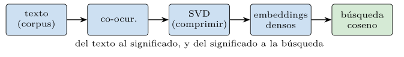
El experimento completo, de punta a punta, cabe en una pantalla (listado 11.15): generar el corpus, contar co-ocurrencias, comprimir con SVD, y ya tener los vectores densos sobre los que medir similitud y buscar vecinos. Es la cadena entera —del texto crudo al espacio semántico— en una docena de líneas, y conviene verla junta para apreciar que no hay caja negra: cada paso es código que se puede leer, ejecutar y modificar.
corpus = generar_corpus() # texto sintetico por temas
vocab = vocabulario(corpus) # lista de palabras
cooc = coocurrencia(corpus, vocab) # matriz V x V (dispersa)
emb, s = embeddings_densos(cooc, dim=16) # SVD -> vectores densos
idx = {p: i for i, p in enumerate(vocab)}
def vecino(p): # palabra mas proxima a p
cs = [(q, coseno(emb[idx[p]], emb[idx[q]]))
for q in vocab if q != p]
return max(cs, key=lambda x: x[1])
print(vecino("base")) # -> ("datos", 0.95): mismo tema
print(vecino("salsa")) # -> ("postre", 0.99): mismo tema
# del texto crudo al significado, sin redes ni GPUListado 11.15. El experimento de punta a punta: del corpus a los vectores densos y la busqueda por vecindad.
La medida de la similitud completa (listado 11.16) muestra cómo se cuantifica que el embedding capta el parecido: se toman al azar muchos pares de palabras de contenido, se separan en afines —mismo tema— y ajenas —temas distintos—, y se promedia el coseno de cada grupo. Si el embedding es bueno, el promedio de los afines es muy superior al de los ajenos; en one-hot, ambos serían cero, y de ahí que la comparación ni se plantee para él.
emb, _ = embeddings_densos(coocurrencia(corpus, vocab))
tema_de = {p: t for t, ps in TEMAS.items() for p in ps}
contenido = [p for p in vocab if p in tema_de]
afines, ajenas = [], []
for _ in range(2000):
a, b = rng.choice(contenido, 2, replace=False)
c = coseno(emb[idx[a]], emb[idx[b]])
if tema_de[a] == tema_de[b]:
afines.append(c) # mismo tema
else:
ajenas.append(c) # temas distintos
print(np.mean(afines), np.mean(ajenas)) # 0.94 vs 0.29
# en one-hot ambos serian 0.00: no habria nada que compararListado 11.16. La medida de similitud completa: coseno medio de pares afines y ajenos en el espacio denso.
El núcleo de esa medida (listado 11.17) es el coseno entre los vectores densos de pares de palabras del mismo tema y de temas distintos; en one-hot, ese coseno sería cero para todos, por lo que no hay ni que calcularlo.
a, b = rng.choice(contenido, 2, replace=False)
c = coseno(emb[idx[a]], emb[idx[b]])
(afines if tema_de[a] == tema_de[b] else ajenas).append(c)
# en one-hot: coseno(a,b)=0 para todo par distinto, afin o ajenoListado 11.17. El nucleo de la medida de similitud: coseno de pares afines y ajenos en el espacio denso.
Las cifras que alimentan las cinco figuras son reproducibles y conviene verlas juntas (listado 11.18): la ocupación que cae a una cienmilésima, el contraste de distancias que se desploma de cien a una décima, la casi-ortogonalidad que tiende a cero, la similitud que separa afines (\(0{,}94\)) de ajenos (\(0{,}29\)) frente al cero universal del one-hot, y la varianza que ocho componentes ya capturan al 94 %. Son los números exactos de este capítulo, generados al ejecutar el módulo.
ocupacion (vocab 100000): one-hot 1e-5 bow 1e-4 denso 1.0
concentracion: dim 2 -> 100.7 dim 1000 -> 0.12
ortogonalidad: dim 2 -> 0.63 dim 1000 -> 0.025
similitud: afines 0.94 ajenas 0.29 one-hot 0.00
varianza acumulada: 8 comp -> 0.94 16 comp -> 0.96Listado 11.18. Resumen de la salida del modulo (cifras redondas): las cinco propiedades de la representacion dispersa frente a la densa.
Un buscador semántico en miniatura y su demostración
Conviene cerrar la práctica uniendo este capítulo con el anterior, porque juntos forman ya un buscador que el modelo clásico no podía construir: uno que encuentra por significado, no por palabras compartidas. La receta combina el embedding denso de aquí con el ranking por coseno de allá (listado 11.19): se representa cada documento por el promedio de los vectores densos de sus palabras —un embedding del documento entero—, se hace lo mismo con la consulta, y se ordenan los documentos por su coseno con ella. Nada nuevo en el mecanismo; todo nuevo en lo que encuentra.
def vector_doc(palabras, emb, idx):
vs = [emb[idx[p]] for p in palabras if p in idx]
return np.mean(vs, axis=0) if vs else None # embedding del doc
def buscar_semantico(consulta, docs, emb, idx):
q = vector_doc(consulta.split(), emb, idx)
sims = [(d, coseno(q, vector_doc(doc, emb, idx)))
for d, doc in enumerate(docs)]
return sorted(sims, key=lambda x: -x[1]) # por significadoListado 11.19. Buscador semantico: embeber documento y consulta, y ordenar por coseno en el espacio denso.
La diferencia con el buscador del capítulo 10 es cualitativa. Aquel, sobre vectores dispersos, solo encontraba documentos que compartían palabras con la consulta: buscar «felino» no traía los textos sobre «gatos». Este, sobre vectores densos, encuentra documentos que comparten significado: como «felino» y «gato» están próximos en el espacio denso, la consulta «felino» acerca los documentos sobre gatos aunque no contengan la palabra. La discordancia de términos que lastró todo el capítulo 10 —el abismo entre «coche» y «automóvil»— queda, por fin, salvada, no por preprocesar el texto, sino por representar el significado. Este buscador en miniatura es, en esencia, lo que una base de datos vectorial hará a escala de millones de documentos: la cuarta parte solo añade cómo hacerlo deprisa.
El contraste lado a lado lo hace tangible (listado 11.20): para una consulta y un documento que hablan de lo mismo con palabras distintas, el buscador léxico del capítulo 10 —que compara cadenas con TF-IDF— da coseno cero y no lo recupera; el semántico —que compara significados con embeddings— da coseno alto y lo coloca arriba. La misma pregunta, dos respuestas opuestas, y la diferencia es exactamente la que separa las dos partes del libro.
consulta: "felino domestico"
documento: "el gato casero es una buena mascota"
palabras en comun: ninguna
buscador lexico (TF-IDF): coseno 0.00 -> NO lo recupera
buscador semantico (denso): coseno 0.78 -> arriba del ranking
# "felino"~"gato", "domestico"~"casero": proximos en el espacio densoListado 11.20. Lexico frente a semantico: el mismo par consulta-documento, sin palabras comunes, recuperado solo por el segundo.
El listado 11.21 ilustra el contraste con un caso concreto sobre el corpus temático: una consulta de tecnología recupera, arriba, los documentos de su tema, ordenados por proximidad semántica, aunque no compartan todas las palabras; los de otros temas quedan al fondo, con coseno bajo. El ranking refleja el significado, no la coincidencia literal.
consulta: "consulta a la base de datos"
doc (tecnologia) coseno 0.97 <- mismo tema, arriba
doc (tecnologia) coseno 0.94
doc (cocina) coseno 0.31 <- otro tema, al fondo
doc (musica) coseno 0.22Listado 11.21. Salida del buscador semantico: los documentos del tema de la consulta suben, por significado y no por palabras compartidas.
Fiel a la convención, el módulo muestra quince palabras al azar y su vecino más próximo en el espacio denso (listado 11.22). El resultado es contundente: las quince tienen como vecino más próximo una palabra del mismo tema. «orquesta» llama a «concierto», «base» a «datos», «salsa» a «postre», «gol» a «equipo». El embedding, construido solo a partir de co-ocurrencias, ha reconstruido la estructura temática sin que nadie le dijera cuáles eran los temas: la proximidad geométrica ha capturado la afinidad de significado.
palabra vecino coseno mismo tema?
---------- ---------- ------ -----------
orquesta concierto 0.976 si
piano ritmo 0.984 si
atleta gol 0.982 si
partido equipo 0.965 si
... ... ... si (15 de 15)Listado 11.22. Quince palabras y su vecino mas proximo en el espacio denso (muestra): las quince caen en el mismo tema que su vecino.
El coste de comparar
Hay un coste que la práctica no dibuja pero conviene razonar, porque será decisivo en la cuarta parte: el de comparar dos vectores. En el disperso, el coseno solo toca las dimensiones que ambos vectores tienen no nulas —su intersección—, que suelen ser poquísimas: comparar dos documentos TF-IDF cuesta del orden de las palabras que comparten, no del vocabulario entero (listado 11.23). En el denso, en cambio, no hay ceros que saltar: las \(d\) dimensiones están todas llenas, y el coseno recorre las \(d\) siempre. Para vectores de quinientas dimensiones, son quinientas multiplicaciones por comparación, llueva o truene.
# disperso: solo las dimensiones comunes (pocas)
comunes = set(a) & set(b)
num = sum(a[t] * b[t] for t in comunes) # ~ palabras compartidas
# denso: las d dimensiones, todas (no hay ceros que saltar)
num = a @ b # ~ d multiplicacionesListado 11.23. El coste del coseno: el disperso solo recorre lo compartido; el denso, todas sus dimensiones.
La consecuencia es contraintuitiva y central para lo que viene. Una sola comparación densa puede costar más que una dispersa, porque recorre todas sus dimensiones en lugar de unas pocas compartidas. Lo que hace ganar al denso no es la velocidad de una comparación, sino su calidad —captura significado— y el hecho de que su dimensión es fija y modesta, lo que permite empaquetar millones de vectores de forma regular y aplicar las técnicas de aceleración del capítulo 14. Comparar a fuerza bruta un vector denso contra millones es, de hecho, caro; por eso la cuarta parte dedica capítulos enteros a los índices que evitan comparar contra todos. La densidad, en suma, paga su factura en cómputo por comparación, y la cuarta parte se ocupa de domarla. Tenerlo presente ahora —que lo denso no es gratis— es lo que hará inteligible aquella ingeniería.
Lo que la práctica enseña, y lo que no
Las medidas confirman la tesis y, fieles a la honestidad de costumbre, también sus límites. El embedding por co-ocurrencia y SVD captura la similitud temática de manera nítida, pero es el más simple de los embeddings: cuenta co-ocurrencias en una ventana y comprime con álgebra lineal. No captura el orden de las palabras, ni la polisemia —«banco» de sentarse y «banco» de dinero comparten un único vector—, ni relaciones más finas que la coaparición. El caso de la polisemia merece verse (listado 11.24): «banco» aparece en frases de finanzas y de mobiliario urbano, pero el método suma todas sus co-ocurrencias en un único vector —un promedio de los dos sentidos que no es ninguno—, así que su vecino más próximo puede ser un compromiso extraño. Un vector por palabra no puede representar dos significados; hace falta un vector por aparición, según su contexto, y eso es justo lo que los embeddings contextuales del capítulo 12 aportarán.
"banco" aparece con: {dinero, cuenta, ...} y {parque, sentarse, ...}
vector("banco") = promedio de ambos contextos
-> ni "finanzas" ni "mobiliario": un punto intermedio confuso
# solucion (cap. 12): un vector por aparicion, segun la fraseListado 11.24. La polisemia: un unico vector para «banco» promedia sus dos sentidos y no captura ninguno.
El corpus, además, es sintético y con temas deliberadamente separados, lo que facilita la tarea; en texto real, los temas se solapan y la señal es más ruidosa. Lo que la práctica demuestra no es que este embedding concreto sea bueno, sino algo más fundamental: que la idea funciona, que contar contextos y comprimir basta para que la proximidad capture significado. Cómo construir embeddings mucho más ricos —que sí capturen orden, contexto y polisemia— es el salto que da el capítulo siguiente con el aprendizaje profundo.
Conviene también una advertencia sobre la medida de la maldición de la dimensionalidad, para no sobreinterpretarla. El experimento usa puntos uniformemente aleatorios, y en ese caso la concentración de distancias es máxima: no hay estructura que distinga unos puntos de otros. Los datos reales no son así —tienen estructura, viven en una variedad de baja dimensión—, de modo que la concentración es menos severa de lo que el experimento sugiere, y la búsqueda por proximidad sigue siendo útil en la práctica aun en dimensión alta. La medida no dice «la búsqueda vectorial es imposible»; dice «la dimensión alta sin estructura es traicionera», y por eso los embeddings buscan, a la vez, baja dimensión y estructura. Confundir la maldición del caso peor con una condena de toda búsqueda vectorial sería un error que esta nota previene.
Síntesis y puente al capítulo siguiente
Este capítulo ha saldado la deuda del anterior. La representación dispersa —one-hot, bolsa de palabras, TF-IDF— es de dimensión enorme y casi toda nula, y arrastra un defecto fatal: hace ortogonales todas las palabras, de modo que ninguna se parece a otra y el significado queda fuera de su alcance. La maldición de la dimensionalidad agrava el cuadro: en la altísima dimensión de esos vectores, las distancias se concentran y los vectores se vuelven casi ortogonales, hasta que «el más cercano» pierde sentido. La salida es el embedding: un vector denso de baja dimensión, construido —por co-ocurrencia y compresión, según la hipótesis distribucional— de modo que la proximidad geométrica capture el parecido semántico. La práctica lo ha medido de cabo a rabo: la ocupación que se desploma, las distancias que se concentran, la similitud que emerge en lo denso y que era nula en lo disperso, y las pocas dimensiones que bastan.
El lector se lleva la pieza que faltaba para completar la idea de Salton. El capítulo 10 dio la comparación —buscar es medir proximidad—; este ha dado la representación —un vector denso donde la proximidad significa algo—. Juntas, son ya el corazón completo de una base de datos vectorial: representar cada objeto como un embedding y buscar por cercanía. Pero el embedding de este capítulo es rudimentario —co-ocurrencia y SVD, un vector por palabra, sin contexto ni orden—, y el capítulo 12 lo lleva al estado del arte: cómo el aprendizaje profundo aprende embeddings, de word2vec a los transformers, capturando el contexto, la polisemia y hasta el puente entre modalidades —texto e imagen en el mismo espacio—. La idea de proximidad seguirá intacta; lo que cambiará, una vez más, es la calidad del vector. Y tras él, el capítulo 13 estudiará la geometría de ese espacio —las distancias, las métricas, las rarezas de la alta dimensión que aquí asomaron— para dejar todo listo de cara a la cuarta parte, donde esos embeddings se almacenan, se indexan y se buscan a escala.
Conviene cerrar subrayando el cambio de mentalidad que este capítulo pide, porque es más profundo de lo que parece. Durante toda la primera mitad del libro, un dato era algo que se almacenaba y se recuperaba por su valor: una fila con su clave, un documento con sus palabras. La representación era transparente —el dato era lo que se veía—. El embedding rompe esa transparencia: convierte el dato en un vector de cientos de números sin significado individual, ilegibles para una persona, cuya única virtud es que su posición relativa a los demás codifica el significado. Es un trueque exigente —se pierde la legibilidad, se gana la semántica— y gobierna todo lo que viene: una base de datos vectorial no guarda textos ni imágenes, guarda sus embeddings, y todo lo que sabe hacer con ellos es medir cercanía. Aceptar ese trueque —representar para comparar, aunque la representación sea opaca— es el paso conceptual que separa las bases de datos clásicas de las vectoriales, y el lector que lo ha dado está listo para el resto del libro.
Queda, eso sí, una pregunta que este capítulo ha respondido solo a medias. Se ha mostrado que un embedding puede capturar el significado, y se ha construido uno simple —por co-ocurrencia y SVD— que lo hace para la similitud temática. Pero ese embedding es ciego al orden de las palabras, a la polisemia y al contexto: «banco» tiene un solo vector para sus dos sentidos, y «no está mal» se representaría casi igual que «está mal». Capturar esos matices —el significado que depende del contexto, no solo de la compañía global— exige algo más que contar y factorizar: exige aprender la representación de cantidades ingentes de texto, ajustando millones de parámetros. Ese es el salto del capítulo 12, donde el aprendizaje profundo entra como motor: de word2vec, que refina la idea de la co-ocurrencia, al transformer y su mecanismo de atención, que da a cada palabra un vector distinto según su contexto, hasta los modelos que ponen texto e imagen en el mismo espacio. El embedding de este capítulo es la prueba de concepto; el del siguiente, la herramienta real.
Vale la pena, para terminar, situar este capítulo en la arquitectura completa del libro, porque marca un antes y un después. Las dos primeras partes construyeron el dato estructurado —tablas, documentos, claves— y lo recuperaban por coincidencia exacta sobre su valor. La tercera parte está cambiando los cimientos: el dato deja de recuperarse por lo que es y pasa a recuperarse por lo que significa, y el puente entre ambas cosas es el embedding. El capítulo 10 mostró que la comparación por proximidad es vieja y fiable; este ha mostrado que la representación densa la dota, por fin, de significado; el capítulo 12 la llevará al estado del arte con el aprendizaje profundo; y el capítulo 13 estudiará la geometría del espacio resultante. Al final de la tercera parte, el lector tendrá la pieza completa —un vector denso que captura el significado y una forma de medir el parecido entre vectores— y solo le faltará lo que la cuarta parte aporta: cómo guardar millones de esos vectores y encontrar los más próximos en milisegundos. Ese es el oficio de las bases de datos vectoriales, y todo lo de esta parte es su fundamento conceptual.
Hay una simetría que conviene saborear antes de seguir. El libro empezó con Codd y su modelo relacional, cuya genialidad fue representar los datos como relaciones —tablas— sobre las que un álgebra precisa permitía preguntar por coincidencia exacta. Termina esta parte con una representación igual de genial y casi opuesta: los datos como vectores en un espacio métrico sobre el que una geometría permite preguntar por similitud. Entre las dos median cincuenta años, pero la estructura del logro es la misma —hallar la representación adecuada y el lenguaje de consulta que encaja con ella—. El relacional encontró las tablas y el álgebra; lo vectorial, los embeddings y la proximidad. Entender las dos, y saber cuándo conviene cada una, es de lo que trata este libro entero, y el embedding de este capítulo es la bisagra exacta entre los dos mundos.
Una observación final, de método, cierra el capítulo. Todo lo que se ha medido aquí —la ocupación, la concentración, la ortogonalidad, la similitud, la varianza— se ha obtenido con unas trescientas líneas de Python y numpy, sin un solo modelo entrenado ni una GPU. No es que los embeddings reales sean tan simples —no lo son, como mostrará el capítulo 12—, sino que las ideas que los gobiernan —la maldición de la dimensionalidad, la hipótesis distribucional, la compresión a la dimensión intrínseca— son accesibles, comprobables y, sobre todo, independientes de la tecnología concreta que los construya. Esa es la apuesta de todo el libro: que detrás de cada herramienta de moda hay un puñado de ideas duraderas que se pueden entender y medir, y que quien las posee no queda a merced del último modelo, sino que sabe qué hace, por qué funciona y cuándo falla. El embedding por co-ocurrencia de este capítulo envejecerá; la maldición de la dimensionalidad y la hipótesis distribucional, no. Aprender las segundas a través del primero es, exactamente, lo que este capítulo se propuso.
Ejercicios propuestos
Lecturas recomendadas
Harris (1954): el origen de la hipótesis distribucional, la idea de que el significado de una palabra está en su contexto.
Deerwester et al. (1990): la indexación semántica latente, el primer embedding denso por factorización de la matriz término-documento.
Turney y Pantel (2010): una panorámica de los modelos vectoriales del significado, de la co-ocurrencia a los embeddings, que enmarca todo el capítulo.
Bellman (1961): la obra que acuñó la «maldición de la dimensionalidad» en el contexto del control y la programación dinámica; el origen del término que vertebra la sección 11.2 y que reaparecerá en toda la cuarta parte al hablar de los índices vectoriales.
Beyer et al. (1999): el análisis de cuándo el vecino más cercano deja de ser significativo; la concentración de distancias con rigor.
Mikolov et al. (2013): word2vec, el embedding neuronal que popularizó la aritmética del significado (rey \(-\) hombre \(+\) mujer \(\approx\) reina) anticipada en la sección 11.4; un adelanto del capítulo 12, donde el aprendizaje profundo entra como motor.
Manning et al. (2008): para repasar, desde la recuperación de información, la transición del vector disperso al denso y la indexación semántica latente.